Кейс · Mobile · Криптокошелёк
MOUNT: холодный криптокошелёк для всех
Мобильное приложение, в котором можно хранить и использовать криптовалюту. Режим обучения и простой интерфейс снимают страх первой ошибки.
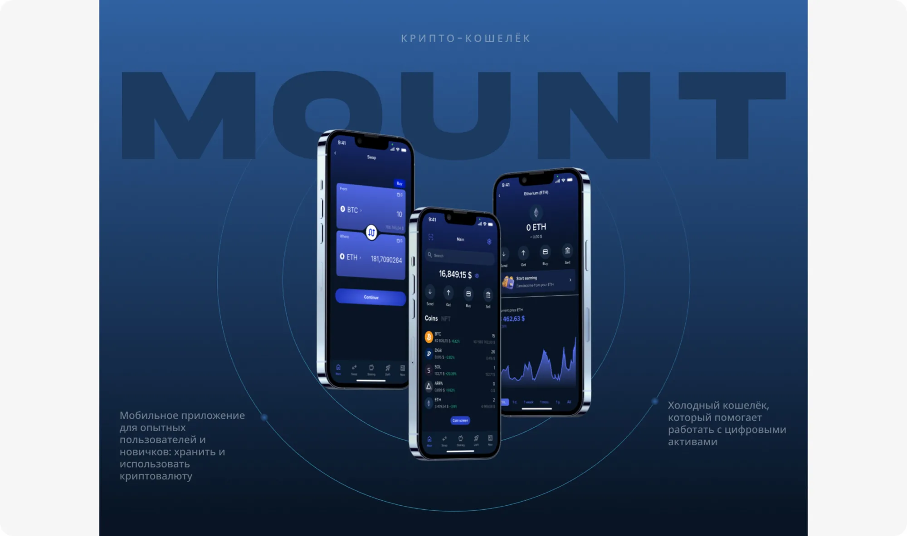
- Роль
- UX/UI-дизайнер
- Тип
- Концептуальный проект
- Платформа
- iOS, мобильное приложение
- Срок
- 2 недели
- Мой вклад
- Исследования, UX, UI, UI-kit, прототип
Коротко о кейсе
MOUNT - холодный кошелёк, который помогает работать с цифровыми активами: обмен валют между пользователями, краткая рыночная аналитика, бесплатные переводы между кроссчейн-мостами и обмен криптовалют. Он подходит и тем, кто давно в крипте, и тем, кто только пришёл.
01 · О проекте
Проблема и решение
Порог входа в криптовалюты низкий, но страх ошибки и нехватка знаний останавливают значительную часть новичков.
О проекте
Холодный кошелёк, который помогает работать с цифровыми активами: обмен валют между пользователями, краткая рыночная аналитика, бесплатные переводы между кроссчейн-мостами и обмен криптовалют.
Проблема
Несмотря на низкий порог входа на крипторынок, около половины потенциальных пользователей отваливаются из-за нехватки знаний или просто из страха нажать не ту кнопку и потерять все деньги.
Решение
Режим обучения при первом запуске и простой дизайн, который облегчает навигацию: подсказки для новичков и полный набор инструментов для опытных пользователей.
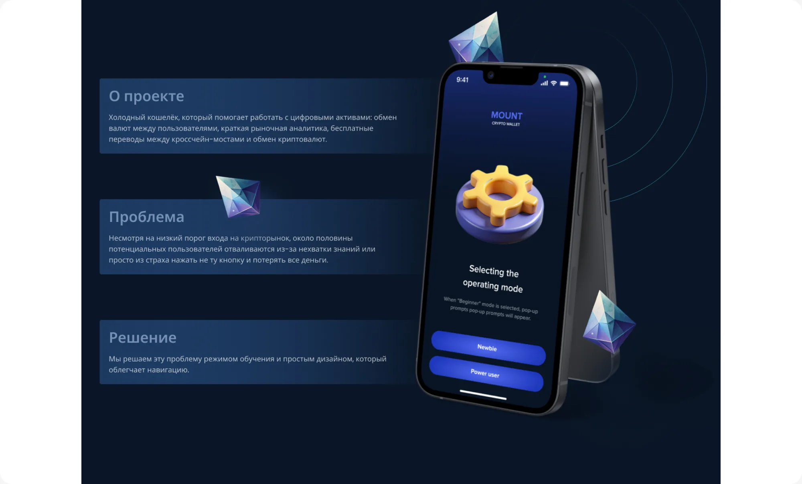
02 · Процесс
Как строилась работа
Три этапа: от понимания рынка и пользователей до интерактивного прототипа.
Маркетинговое исследование
- Исследование рынка
- Анализ конкурентов
- Мудборд
UX-исследование
- Персоны и JTBD
- Функциональная карта
- Пользовательские сценарии
UI-дизайн
- Вайрфреймы
- Визуальный дизайн (UI)
- Интерактивный прототип
03 · Персоны и job stories
Три персоны, три уровня опыта
От бармена, который только открывает для себя крипту, до предпринимателя, который инвестирует часть дохода.
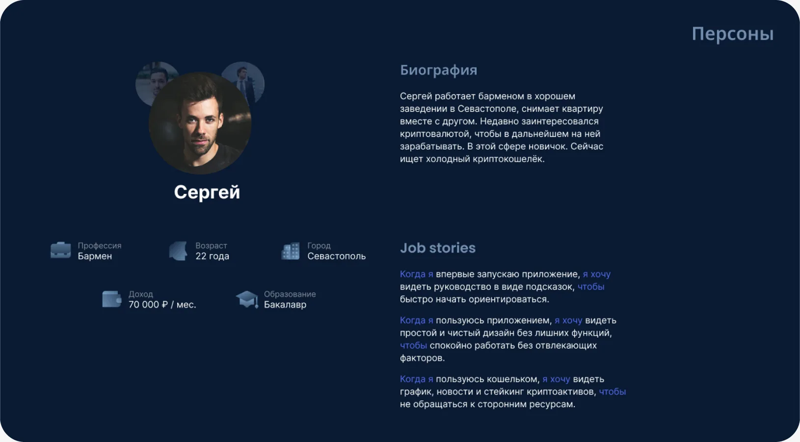
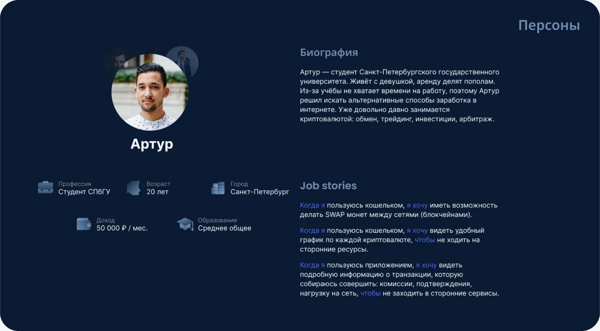
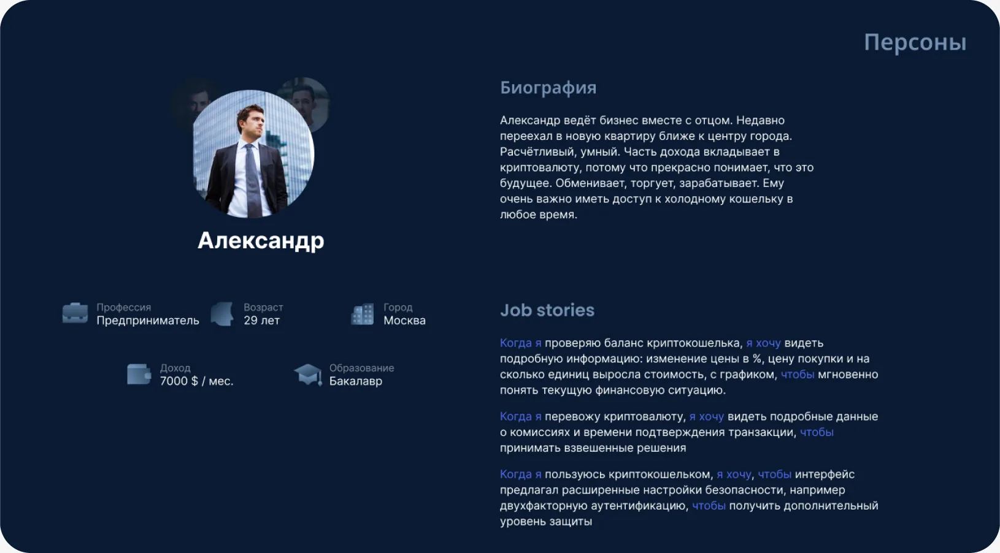
Что общего у персон
- Всё в одном месте: график, новости и стейкинг без сторонних сервисов
- Прозрачные транзакции: комиссии, подтверждения, нагрузка на сеть
- Безопасность: двухфакторная аутентификация и расширенные настройки
- Новичку нужны подсказки и интерфейс без лишних функций
- Обмен монет между сетями (SWAP)
04 · Информационная архитектура
Главная как хаб для всех действий
Структура строилась так, чтобы любое основное действие было доступно в пару касаний, а новичок не терялся на старте.
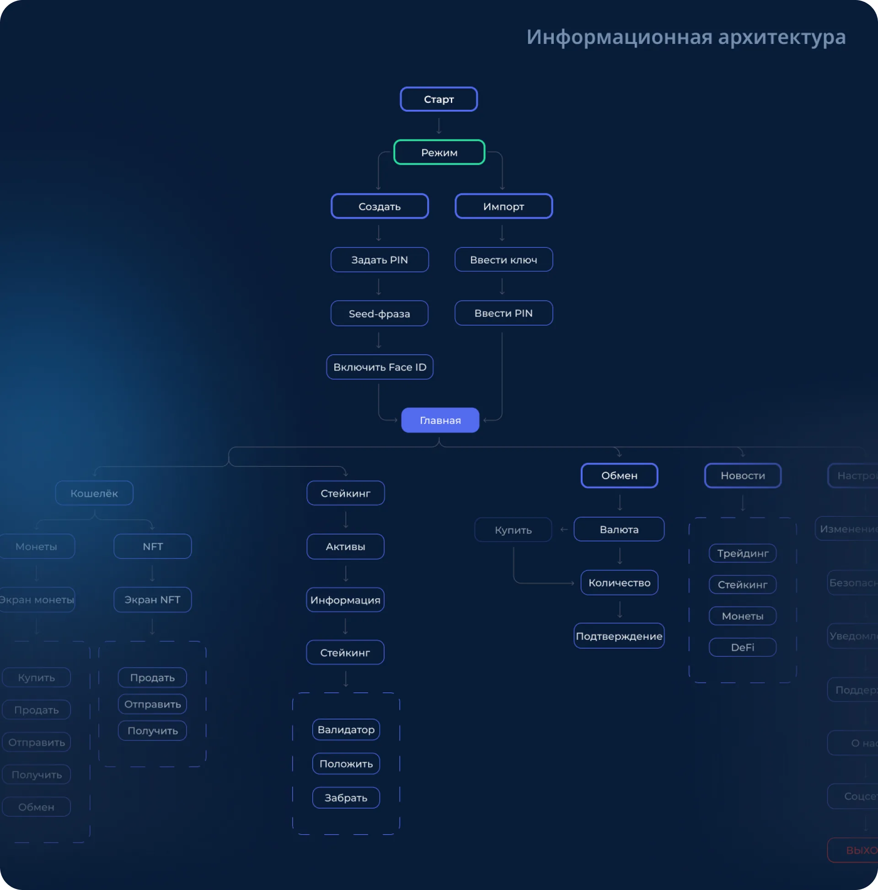
Старт
Создание или импорт кошелька, выбор режима «Новичок» или «Опытный», PIN, seed-фраза и Face ID.
Главная
С главного экрана доступны кошелёк, стейкинг, обмен, новости и настройки.
Действия с монетой
Купить, продать, отправить, получить и обменять монету из одного места. NFT и стейкинг вынесены в отдельные ветки.
Ключевые решения
Выбор режима сразу при старте, чтобы подсказки включались с первого экрана. Отдельная ветка безопасности: двухфакторная аутентификация, уведомления, поддержка.
05 · Пользовательские сценарии
От потребности к пути по экранам
Из job stories персон выделили 9 пользовательских сценариев. Ниже самые частые: перевод с прозрачными комиссиями, обмен между сетями, новости со стейкингом.
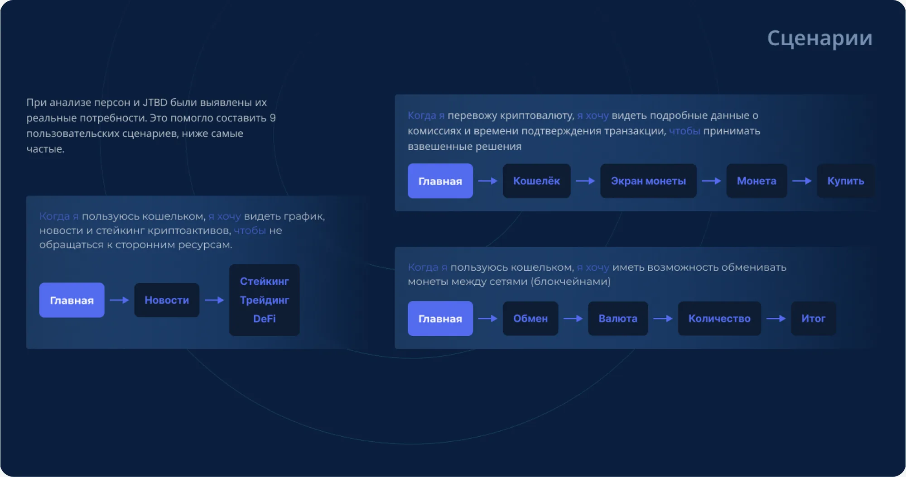
06 · Вайрфреймы
Режимы, безопасность и прозрачные условия
Вайрфреймы собрали ключевые экраны: от создания кошелька до стейкинга и настроек безопасности.
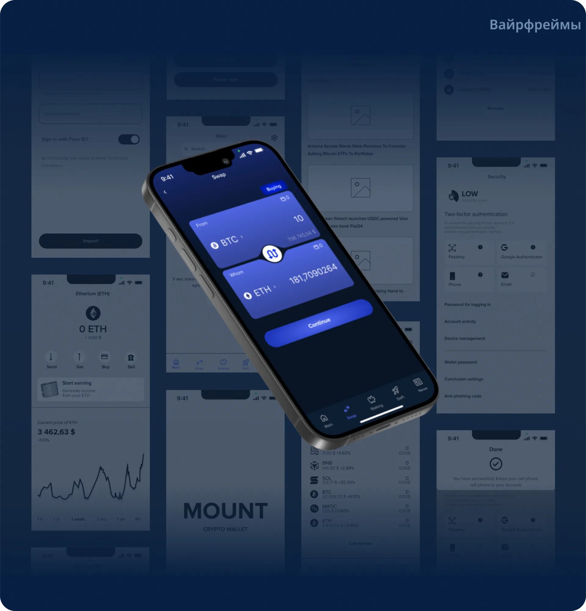
Режимы
При первом запуске пользователь выбирает «Новичок» или «Опытный». В режиме новичка появляются всплывающие подсказки, режим можно сменить в настройках в любой момент.
Безопасность
Отдельный экран уровня безопасности: двухфакторная аутентификация (Passkey, Google Authenticator, телефон, email), антифишинговый код и управление устройствами.
Прозрачность
Для стейкинга до подтверждения видны доходность (APR), минимальная сумма, время блокировки и сетевой сбор.
07 · Интерфейс
Три главных сценария
Экраны собраны по пользовательским сценариям: от главного экрана до результата.
Сценарий 1 · Стейкинг, DeFi, трейдинг и новости
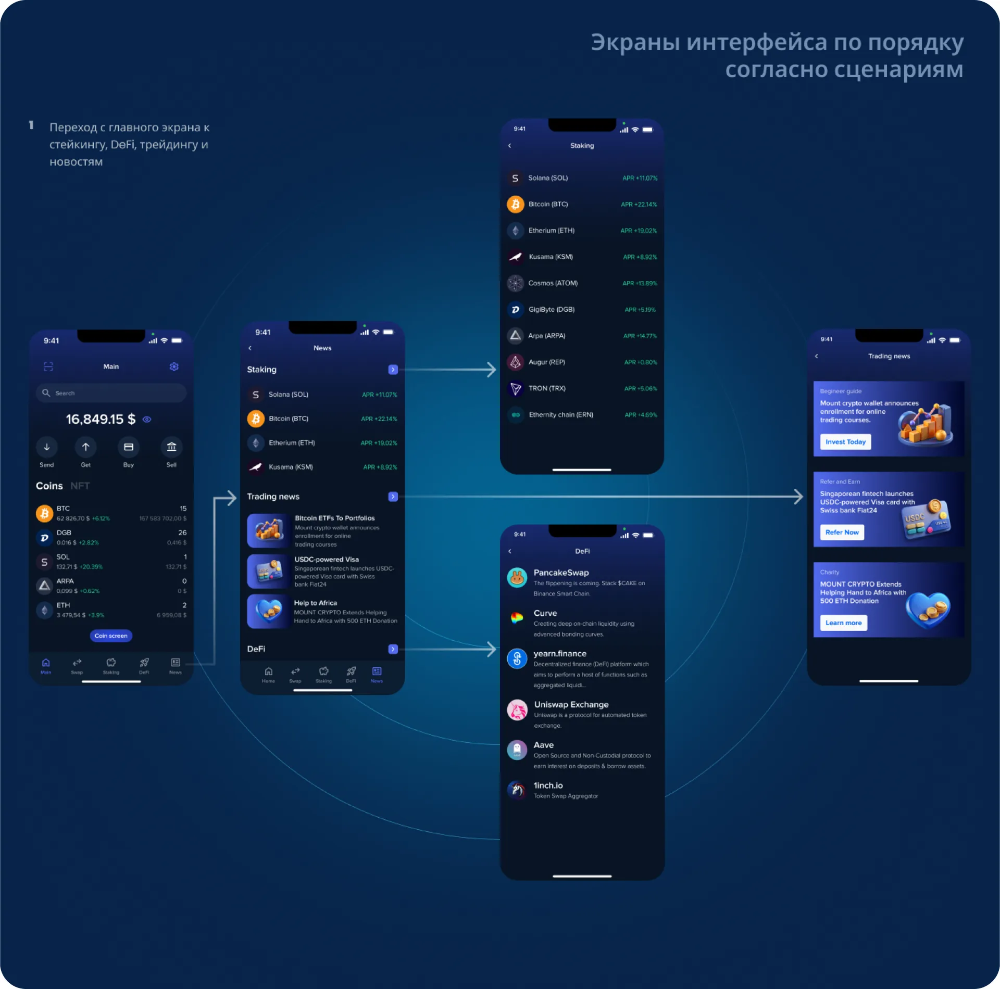
Задача пользователя
Когда я пользуюсь кошельком, я хочу видеть график, новости и стейкинг криптоактивов, чтобы не обращаться к сторонним ресурсам.
Что видит пользователь
Экран новостей объединяет блоки стейкинга, трейдинг-новостей и DeFi. В стейкинге сразу видна доходность (APR) по каждому активу, в DeFi - каталог популярных приложений с кратким описанием.
Сценарий 2 · Покупка монеты
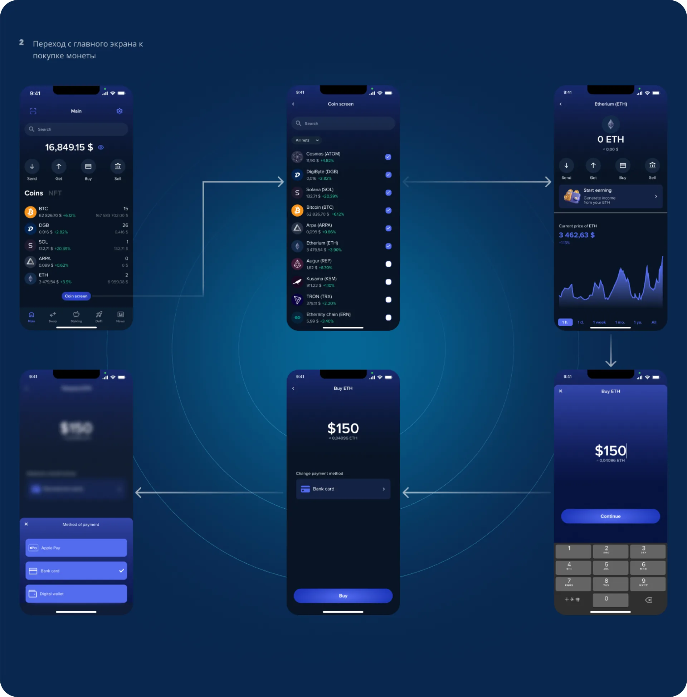
Задача пользователя
Когда я проверяю баланс криптокошелька, я хочу видеть подробную информацию: изменение цены в %, цену покупки и график, чтобы мгновенно понять текущую финансовую ситуацию.
Что видит пользователь
С главного экрана пользователь попадает на экран монеты с графиком цены, вводит сумму на цифровой клавиатуре и выбирает способ оплаты: Apple Pay, банковская карта или цифровой кошелёк.
Сценарий 3 · Обмен монет
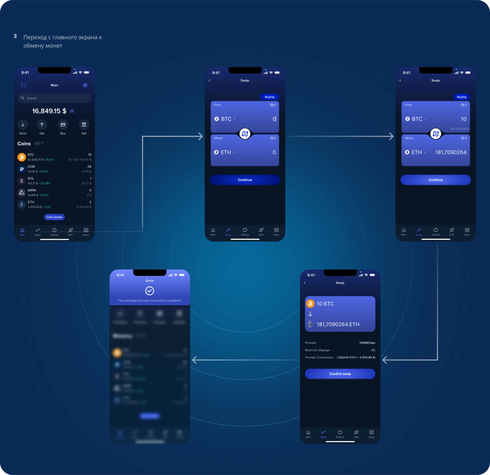
Задача пользователя
Когда я пользуюсь кошельком, я хочу иметь возможность делать SWAP монет между сетями (блокчейнами).
Что видит пользователь
Обмен собран в один экран: выбор пары и суммы, сразу видно, сколько получится. Перед подтверждением показаны провайдер, максимальное проскальзывание и комиссия, а итоговый экран подтверждает успешный обмен.
08 · Типографика, цвет и UI-kit
Тёмная палитра и понятные компоненты
Холодная палитра и крупные числа задают ощущение надёжности, а единый набор компонентов держит интерфейс цельным.
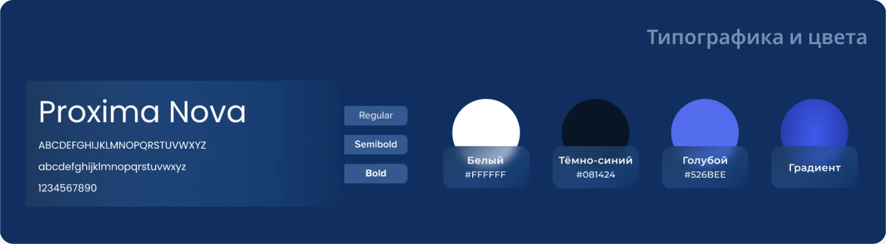
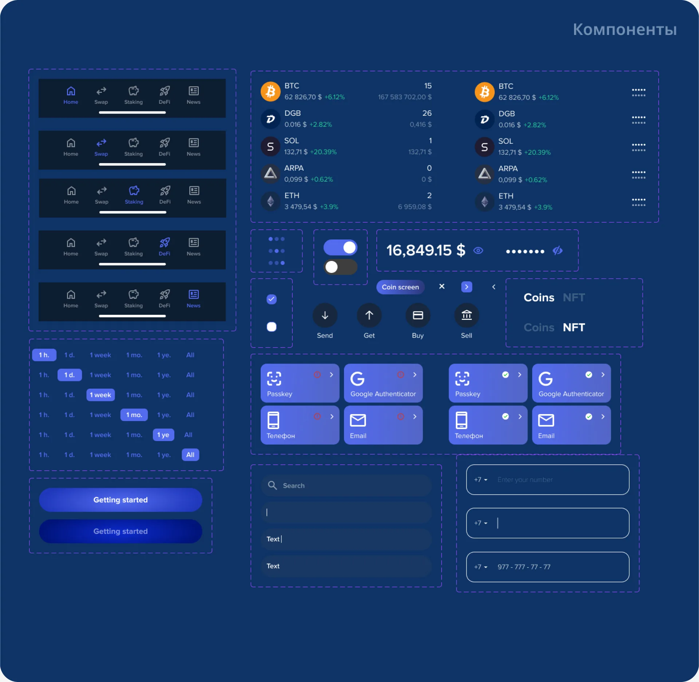
Типографика
Proxima Nova в трёх начертаниях: Regular, Semibold и Bold. Суммы и балансы читаются с первого взгляда.
Цвет
Белый, тёмно-синий (#081424), голубой (#526BEE) и градиент для главных кнопок и акцентов.
Компоненты
Нижняя навигация, карточки монет, переключатель периода графика, способы входа и защиты, поля ввода и кнопки.
09 · Итог
Что получилось
Продукт
Мобильный криптокошелёк с режимом обучения: понятный старт для новичков и полный набор инструментов для опытных пользователей.
Дизайн-работа
Исследование, персоны и JTBD, информационная архитектура, сценарии, вайрфреймы, UI и UI-kit в одном цельном процессе.
Что дальше
Тесты прототипа с новичками и проверка гипотезы, что режим обучения снижает отток на старте.
Другие проекты
Можете ознакомиться с моими другими проектами


Блок для связи.
Поработаем вместе?
Напишите мне в телеграм
- Email:
- mountdsgn@mail.ru
- Phone
- +7 (918) 321-26-35